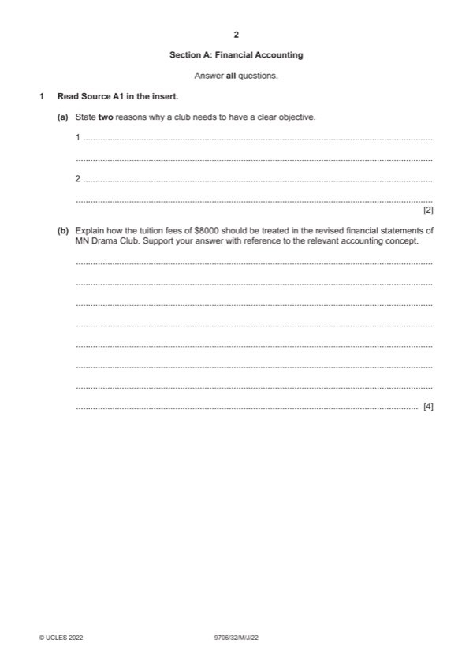

Question 1

Original paper page 2
Part 1(a) — solution
Helps the club to ensure that it has appropriate plans / strategies (1) 2
Provides clarity to potential members as to the purpose of the club (1)
Accept other valid responses.
Mark points
- Include the ideas shown in the solution above.
Part 1(b) — solution
This is an application of the accrual / matching concept. (1) 4
3-month’s tuition of $3000 covering October to December 2021 is recognised in the income and expenditure account for
the year ended 31 December 2021 (1)
The remaining $5000 is shown under the current liability section of the statement of financial position at 31 December
2021 (1) because this is deferred income / refundable (1)
2022 Page 7 of 19
9706/32 Cambridge International AS & A Level – Mark Scheme May/June 2022
Mark points
- Include the ideas shown in the solution above.
Part 1(c) — solution
Income and expenditure account for the year ended 31 December 2021 12
$ $
Subscription fee W1 49 100 (4)
Tuition fees W2 3 000 (1)
Profit from performances W3 2 700 (1)
Mark points
- Include the ideas shown in the solution above.
Part 1(d) — solution
For (Max 3) 7
The club can earn more income – students’ fees (1)
Available space of building can be utilised at other times (1)
Student members can later become ordinary members and this will increase revenue in the future (1)
Students from poor families can afford the tuition fee (1)
The image of the club can be promoted (1)
Against (Max 3)
The plan may not meet the existing objective of the club (1)
The club may be in a financially risky position as its bank balance is low. (1)
The club will have to raise extra funds for the expansion. (1)
There may not be enough qualified volunteers to carry out the work. (1)
The other providers might improve their offerings. (1)
Mark points
- Include the ideas shown in the solution above.
Part 1 — solution
mark for decision
Accept other valid answers.
2022 Page 9 of 19
9706/32 Cambridge International AS & A Level – Mark Scheme May/June 2022
Mark points
- Include the ideas shown in the solution above.
Part 1 — solution
mark for decision
Accept other valid answers.
Mark points
- Include the ideas shown in the solution above.
Part 1 — solution
mark for decision
Accept OF comments
Mark points
- Include the ideas shown in the solution above.